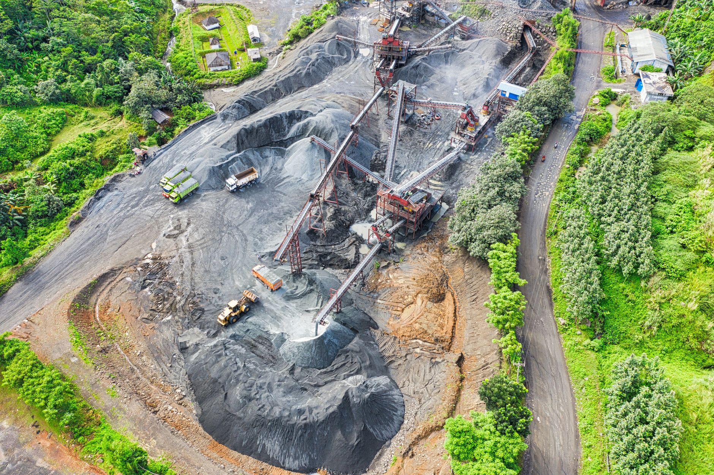

콩고 탄탈륨 광산 붕괴 200명 사망, 공급망 비상

전 세계 탄탈륨 생산량의 약 15%를 공급하는 콩고민주공화국(DRC) 루바야 광산에서 대규모 붕괴 사고가 발생해 최소 200명이 사망한 것으로 집계됐다. 루바야 광산은 DRC 남키부주에 위치한 대형 주석·탄탈륨 복합 광산으로, 수천 명의 광부가 종사하는 주요 생산 거점이다.
탄탈륨(Ta)은 원자번호 73번의 희귀 전이금속으로, 전자기기 핵심 부품인 탄탈륨 커패시터의 원료로 사용된다. 탄탈륨 커패시터는 소형화, 고용량, 고신뢰성 특성 때문에 스마트폰, 노트북, 의료기기, 자동차 전장, 방산 장비에 이르기까지 광범위하게 탑재된다.
미국 지질조사국(USGS) 자료에 따르면 전 세계 탄탈륨 생산량은 연간 약 2,000톤 수준이며, DRC가 약 40~45%를 차지하는 최대 산지다. 루바야 광산 단독으로 전체의 15% 내외를 생산해왔다는 점에서, 이번 사고로 인한 공급 차질은 단기적으로 불가피하다는 분석이 나온다.
국제 탄탈륨 현물 가격은 사고 소식이 전해진 직후 급등세를 보이고 있다. 탄탈륨 원광석(콜탄) 가격은 킬로그램당 수십 달러 수준에서 거래되어 왔으나, 공급 불안이 지속될 경우 탄탈륨 커패시터 완제품 가격 상승으로 이어질 수 있다.
사고 원인은 현재 조사 중이나, 현지 당국은 우기 시즌 지반 약화와 노후 갱도 구조물이 복합적으로 작용한 것으로 보고 있다. DRC 광산 당국과 유엔 인도주의업무조정국(OCHA)이 현장 구조 작업을 지원하고 있으며, 실종자 수색이 계속되고 있다.
탄탈륨은 분쟁광물(Conflict Mineral)로도 악명 높다. 미국 도드-프랭크법 1502조와 EU 분쟁광물규정에 따라 주석·탄탈륨·텅스텐·금(3TG) 공급망의 원산지 실사가 의무화되어 있다. 이번 사고로 DRC산 탄탈륨에 대한 공급망 실사 압박이 더욱 강화될 전망이다.
국내 탄탈륨 주요 수요처는 삼성전기, 삼화콘덴서, 태양유전 등 전자부품 업체들이다. 탄탈륨 커패시터는 삼성전자, LG전자의 스마트폰·TV·가전 제품군에 광범위하게 사용된다. 업계에서는 현재 재고 수준과 대체 조달처 확보 여부를 긴급 점검하고 있는 것으로 알려졌다.
탄탈륨의 주요 대체 공급국으로는 르완다, 나이지리아, 브라질, 호주가 있다. 특히 르완다는 DRC 탄탈륨이 자국 항구를 통해 세탁·수출되는 경로로 오랫동안 지목받아 왔으나, 최근 자체 합법 생산량도 증가세에 있다. 사고 여파가 장기화될 경우 이들 대체 공급국으로의 조달 전환이 가속화될 수 있다.
국내 전자부품 업계 관계자는 "탄탈륨 커패시터는 대용량 MLCC(적층세라믹커패시터)로 일부 대체 가능하지만 완전 대체는 어렵다"며 "공급 차질이 3개월 이상 지속되면 납기 지연 문제가 현실화될 수 있다"고 우려했다.
글로벌 전자 부품 공급망 측면에서 이번 사고는 특정 광산에 대한 과도한 의존의 위험성을 다시 한번 환기시킨다. 반도체·전자부품 업계에서는 희귀금속 공급망 다변화와 재활용(리사이클링) 기반 도시광산 활용이 장기 과제로 떠오르고 있다.
탄탈륨 재활용 측면에서는 폐전자기기에서 탄탈륨을 회수하는 기술이 점차 고도화되고 있다. 유럽과 일본에서는 e-스크랩 기반 탄탈륨 재활용 프로세스가 상업화 단계에 접어들었으며, 국내 업체들도 관련 기술 투자를 검토하고 있다.
정부 차원에서는 산업통상자원부가 탄탈륨을 희소금속 34종 중 하나로 지정·관리하고 있으나, 비축량과 공급망 위기 대응 체계에 대한 보강이 필요하다는 지적이 잇따르고 있다. 이번 사고를 계기로 희귀금속 공급망 안정화를 위한 정부-민간 협력 강화 논의가 탄력을 받을 것으로 보인다.
전문가들은 단기적으로 루바야 광산의 조업 재개 여부와 대체 조달처 확보 속도가 탄탈륨 가격 변동성을 결정할 핵심 변수가 될 것이라고 분석한다. 이번 사태는 글로벌 첨단 소재 공급망에서 지정학적·인적 리스크가 기술적 위험 못지않게 중요해졌음을 보여주는 사례로 기록될 것이다.